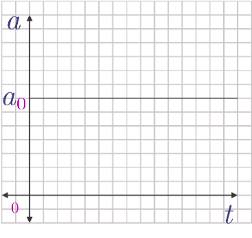
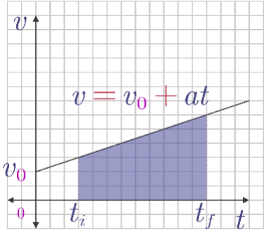
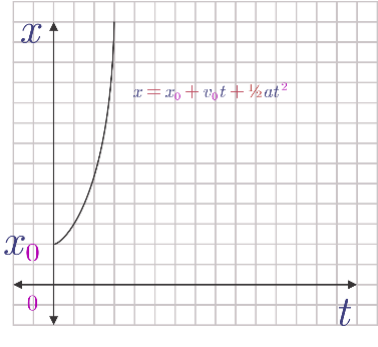

# Gerak dalam Satu Dimensi - Kerangka acuan - Gerak Lurus Beraturan - Gerak Lurus Berubah Beraturan --- - Kapan benda disebut bergerak? --- ### Kerangka acuan - Menunjuk hubungan antara pengamat dan obyek yang diamati - Kadang, kerangka acuan tidak disebutkan. Ini biasanya berarti bahwa pengamat ada dalam kerangka acuan yang sama dengan obyek yang diamati. - Untuk memudahkan pemahaman dan memberikan gambaran yang lebih tepat mengenai kerangka acuan, sering kali digunakan koordinat Cartesian. --- **Sebuah benda dikatakan bergerak jika posisinya berubah terhadap kerangka acuan.** --- ### Gerak Lurus - Gerak lurus adalah gerak yang lintasannya dianggap sebagai lurus - Bukan berarti bahwa benda hanya bergerak ke satu arah saja (benda bisa juga berbalik arah), tetapi bahwa gerakannya hanyalah satu dimensi saja (vertikal atau horizontal). --- <img src="../resources/images/glb00.png" style="width:640px;background-color: whitesmoke"> - Andaikan sebuah benda bergerak dalam lintasan lurus seperti gambar di atas. Pada waktu *t = t<sub>1</sub>*, benda berada pada posisi *x = x<sub>t1</sub>*, pada *t = t<sub>2</sub>*, benda ada di *x = x<sub>t2</sub>*, dst. - Arah ke kanan, dalam kasus ini dipilih sebagai arah positif. - Kerangka acuan adalah *x<sub>0</sub>* --- ### Posisi, Perpindahan dan Jarak - Posisi *x = x<sub>t1</sub>* dapat dituliskan sebagai +6 satuan. - **Perpindahan adalah perubahan posisi benda selama perubahan waktu tertentu (vektor)** - Perpindahan selama *t = t<sub>0</sub>* sampai *t = t<sub>1</sub>* adalah dari *x = x<sub>t0</sub>* ke *x = x<sub>t1</sub>*, yakni sebesar 6 satuan. Demikian pula, perpindahan selama *t = t<sub>1</sub>* sampai *t = t<sub>2</sub>*, adalah 8 satuan, dst. Sehingga perpindahan dapat dirumuskan sebagai ###### `$$\Delta x=x_{akhir}-x_{awal}$$` --- Keterangan: - *Δx* = Perpindahan (m) - *x<sub>awal</sub>* = Posisi awal (m) - *x<sub>akhir</sub>* = Posisi akhir (m) **Jarak didefinisikan sebagai panjang lintasan yang ditempuh benda selama selang waktu tertentu (skalar).** ###### `$$s=|x_{akhir}-x_{awal}|$$` --- ### Kecepatan Rata-rata, Kecepatan Sesaat, Kelajuan Rata-rata, Kelajuan Sesaat --- - **Kelajuan rata-rata** didefinisikan sebagai hasil bagi antara total jarak tempuh dan waktu tempuh. ###### `$$\overline{v}=\frac s t$$` - **Kecepatan rata-rata** didefinisikan sebagai hasil bagi antara perpindahan dan waktu tempuh, atau perbandingan perubahan posisi terhadap perubahan waktu. ###### `$$\overline{\boldsymbol v}=\frac{\Delta \vec{x}}{\Delta t}=\frac{\vec{x}_{akhir}-\vec{x}_{awal}}{t_{akhir}-t_{awal}}$$` --- <img src="../resources/images/glb02.png" style="width:640px;background-color: whitesmoke"> - Berapa kecepatan rata-rata benda dari *t<sub>1</sub>* ke *t<sub>2</sub>*? --- - Kecepatan/kelajuan rata-rata mencerminkan kecepatan/kelajuan pada selang waktu tertentu. Sementara, kecepatan/kelajuan sesaat mencerminkan kecepatan/kelajuan pada selang waktu yang sangat singkat. Dengan demikian, kecepatan/kelajuan sesaat dapat ditentukan dengan persamaan di atas, tetapi dengan selang waktu yang sangat singkat (mendekati nol). Kecepatan sesaat, didefinisikan sebagai ###### `$$\vec{v}=\lim\limits_{\Delta t\to0}\frac{\Delta \vec{x}}{\Delta t}$$` --- ### Gerak Lurus Beraturan (GLB) - **Gerak lurus beraturan** adalah gerak benda dalam lintasan lurus (satu dimensi) dengan kecepatan tetap. Karena kecepatannya tetap maka kecepatan sesaat, kecepatan rata-rata, dan kecepatan pada saat kapan pun selalu sama, *v*. --- Maka, 1. Kecepatan awal *`$v_0=v$`*, karena kecepatan selalu tetap; 2. Percepatan *`$a=0$`*; dan 3. *`$\Delta x=vt$`* atau *`$\vec{x}_{akhir}=\vec{x}_{awal}+vt$`*. ###### `$$\vec{x}_{akhir}=\vec{x}_{awal}+vt$$` --- <img src="../resources/images/glb03.png" style="width:600px;background-color: whitesmoke"> Grafik *v* terhadap *t* dalam GLB --- <img src="../resources/images/glb04.png" style="width:600px;background-color: whitesmoke"> Grafik *x* terhadap *t* dalam GLB --- Dari grafik v − t, dapat dibuktikan bahwa luas daerah di bawah grafik tersebut, dengan batas kiri *t = t<sub>i</sub>* dan batas kanan *t = t<sub>f</sub>* sehingga *∆t = t<sub>f</sub> - t<sub>i</sub>*, adalah sama dengan nilai perpindahannya. --- ### Gerak Lurus Berubah Beraturan (GLBB) - **Gerak lurus berubah beraturan** adalah gerak benda dalam lintasan lurus (satu dimensi) dengan kecepatan yang berubah secara tetap. Perubahan kecepatan per satuan waktu itu disebut sebagai **percepatan**. --- - Dalam GLBB, dikenal juga percepatan rata-rata dan percepatan sesaat. Seperti kecepatan rata-rata, *percepatan rata-rata* adalah hasil bagi antara perubahan kecepatan dan selang waktu, atau perbandingan antara perubahan kecepatan dan selang waktu. --- ###### `$$\vec{a}=\frac{\Delta\vec{v}}{\Delta t}=\frac{\vec{v}_{akhir}-\vec{v}_{awal}}{t_{akhir}-t_{awal}}$$` - Jika waktu awal, *t<sub>awal</sub>=0*, persamaan di atas dapat dibuat menjadi persamaan umum: --- ###### `$$\vec{a}=\frac{\Delta\vec{v}}{\Delta t}=\frac{\vec{v}_{akhir}-\vec{v}_{awal}}{t-t_0}=\frac{\vec{v}_{akhir}-\vec{v}_{awal}}{t}$$` atau ###### `$$\vec{v}_{akhir}=\vec{v}_{awal}+\vec{a}t$$` ###### `$$\vec{v}_{t}=\vec{v}_{0}+\vec{a}t$$` --- - Kecepatan rata-rata benda pada selang waktu *𝑡* tersebut adalah *`$\overline{v}=\frac{\vec{v}_{t}+\vec{v}_{0}}{2}$`* sehingga perpindahannya `$$\Delta\vec{x}=\overline{v}t=\frac{\vec{v}_{t}+\vec{v}_{0}}{2}t=\frac{\vec{v}_{0}+\vec{a}t+\vec{v}_{0}}{2}t$$` ###### `$$\Delta\vec{x}=\vec{v}_{0}t+\frac 1 2\vec{a}t^2$$` ###### `$$s=v_0+\frac 1 2 at^2$$` ---  Grafik *a* terhadap *t* dalam GLBB ---  Grafik *v* terhadap *t* dalam GLBB ---  Grafik *x* terhadap *t* dalam GLBB --- #### Gerak jatuh bebas (GJB) - Gerak jatuh bebas (GJB) merupakan bentuk GLBB dengan arah vertikal ke bawah, kecepatan awal nol, dan percepatannya sama dengan percepatan gravitasi. Karena arah gerak menuju ke bawah, maka arah turun disepakati sebagai arah positif. - Dengan demikian dalam GJB, *`$\vec{v}_{0}=0$`*, *`$\vec{a}=\vec{g}$`* dan *`$\vec{x}=\vec{h}$`*. Persamaan-persamaan dari GLBB juga dapat disesuaikan untuk menghitung ketinggian *h*, dan kecepatan saat menyentuh tanah *v<sub>t</sub>*. --- *`$\Delta\vec{x}=\vec{v}_{0}t+\frac 1 2\vec{a}t^2$`* menjadi ###### `$$\Delta\vec{h}=\frac 1 2\vec{g}t^2$$` atau ###### `$$\vec{h}=\frac 1 2\vec{g}t^2$$` sehingga ###### `$$t=\sqrt{\frac{2\vec{h}}{\vec{g}}}$$` --- *`$\vec{v}_{t}=\vec{v}_{0}+\vec{a}t$`* menjadi ###### `$$\vec{v}_{t}=\vec{g}t$$` ###### `$$\vec{v}_{t}=\sqrt{2\vec{g}\vec{h}}$$` --- #### Gerak vertikal ke atas (GVA) - Gerak vertikal ke atas (GVA) juga merupakan salah satu bentuk GLBB, yang persis berkebalikan dengan GJB. Dalam GVA, benda diberi kecepatan tertentu sehingga bergerak ke atas. - Benda mengalami perlambatan oleh gravitasi sehingga pada titik tertentu, kecepatannya menjadi nol. Pada titik itulah, benda itu akan mengalami gerak jatuh bebas. --- - Karena arah gerak ke atas, maka arah ke atas disepakati sebagai arah positif. Dengan demikian, dalam GVA, *`$\vec{v}_{0}\not =0$`*, *`$\vec{a}=-\vec{g}$`* dan *`$\vec{x}=\vec{h}$`*. Persamaan-persamaan dari GLBB dapat disesuaikan menjadi: --- *`$\Delta\vec{x}=\vec{v}_{0}t+\frac 1 2\vec{a}t^2$`* menjadi ###### `$$\Delta\vec{h}=\vec{v}_0t-\frac 1 2\vec{g}t^2$$` ###### `$$\vec{h}=\vec{v}_0t-\frac 1 2\vec{g}t^2$$` *`$\vec{v}_{t}=\vec{v}_{0}+\vec{a}t$`* menjadi ###### `$$\vec{v}_{t}=\vec{v}_0-\vec{g}t$$` --- - Pada titik tertinggi, *h<sub>max</sub>*, kecepatan benda adalah nol. Maka, persamaan di atas dapat dipakai untuk mencari waktu yang diperlukan untuk mencapai *h<sub>max</sub>*. `$$\vec{v}_{t}=\vec{v}_0-\vec{g}t$$` `$$0=\vec{v}_0-\vec{g}t_{max}$$` ###### `$$t_{max}=\frac{\vec{v}_0}{\vec{g}}$$` --- `$$\vec{h}_{max}=\vec{v}_0t_{max}-\frac 1 2\vec{g}t^2_{max}$$` `$$\vec{h}_{max}=\vec{v}_0\frac{\vec{v}_0}{\vec{g}}-\frac 1 2\vec{g}\Big(\frac{\vec{v}_0}{\vec{g}}\Big)^2$$` ###### `$$\vec{h}_{max}=\frac{\vec{v}_0^2}{2\vec{g}}$$`